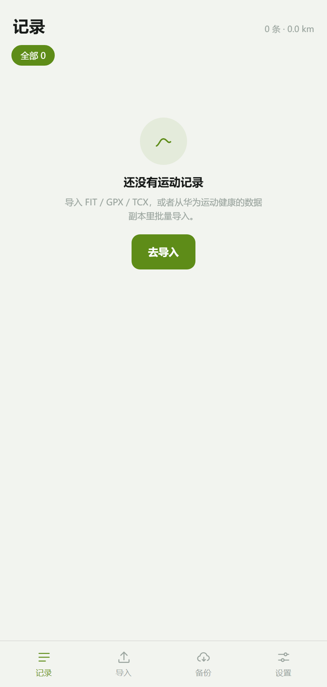
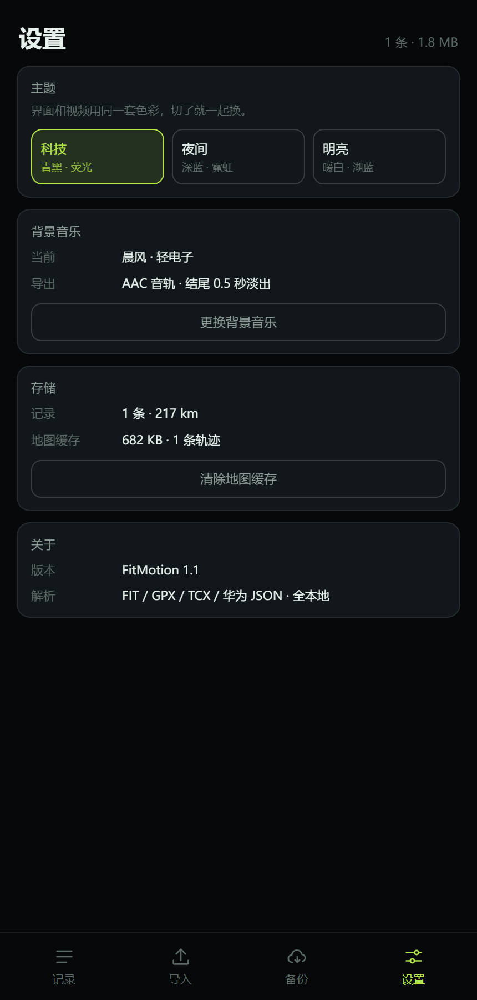
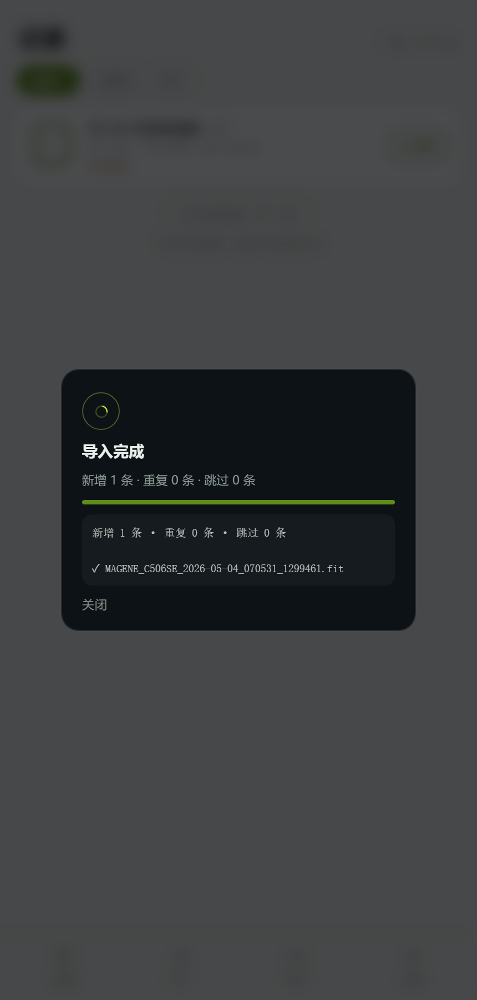
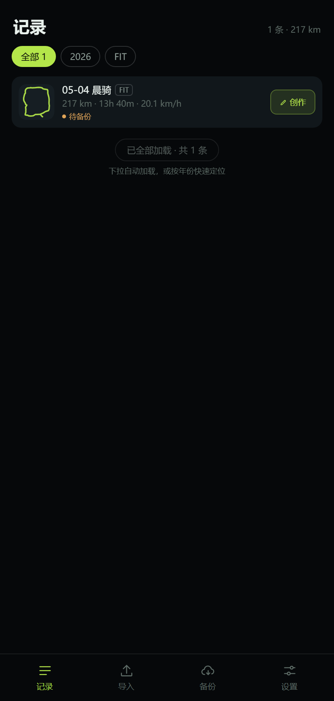
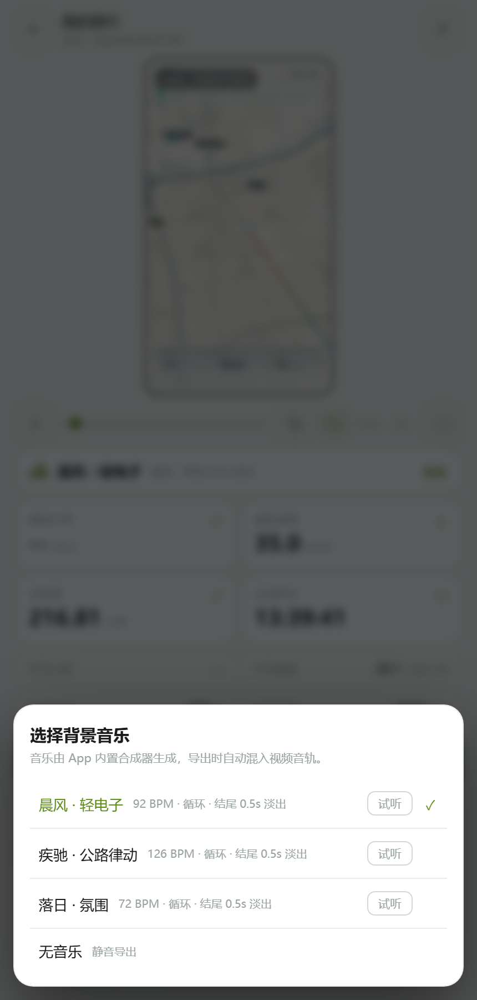
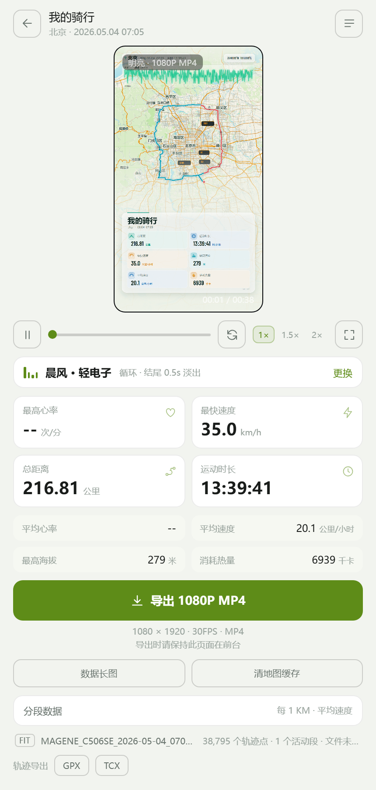
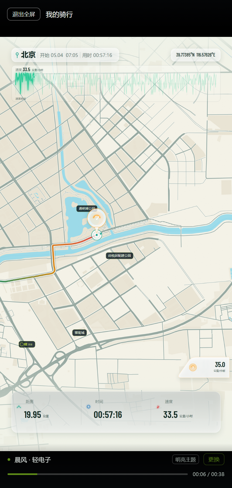
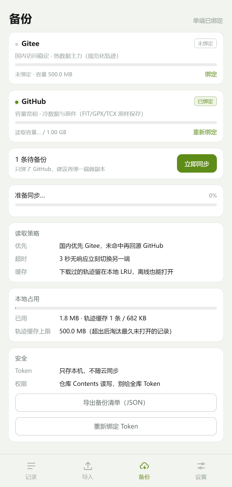
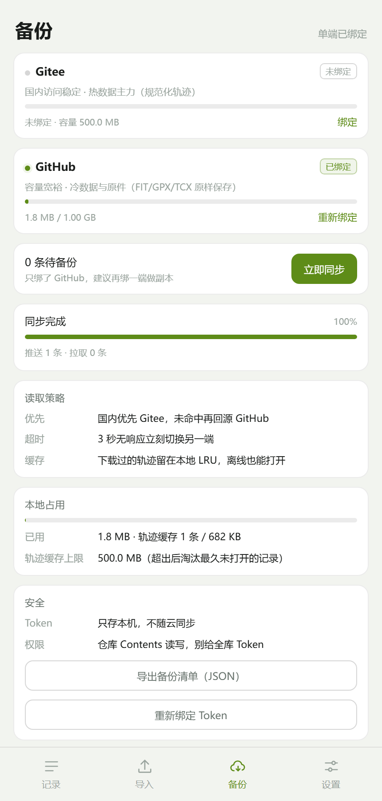

1安装与首次启动
安装包：dist/FitMotion.apk（1.10 MB）。传到手机后点开安装，需要允许「安装未知来源应用」。
- 首次打开会看到记录页空态：0 条 · 0.0 km，底部四个 tab（记录 / 导入 / 备份 / 设置）。
- 不需要登录，也没有引导页。所有数据存在本机 IndexedDB。
- 首次使用建议先到「设置」挑一个主题（科技 / 夜间 / 明亮），界面和视频用同一套配色。
为什么安装包这么小
地图是运行时从瓦片服务拉的；三首背景音乐是 WebAudio 实时合成的，安装包里 0 字节音频。

首次启动：记录页空态，底部四个 tab

设置：主题、背景音乐、存储占用
2导入运动数据
支持 FIT / GPX / TCX 单文件或多选，也支持华为运动健康的「数据副本」JSON。单文件上限 80 MB。
2.1 导入 FIT / GPX / TCX
- 底部「导入」→ 选择 FIT / GPX / TCX 文件。
- 可一次选多个。选中后弹进度层，逐条解析、去重、入库。
- 结束后弹结果报告：新增 N 条 · 重复 M 条 · 跳过 K 条，下面是每条的结论（前 40 条）。
- 点「完成」回记录页，列表已刷新。
2.2 导入华为运动健康的旧数据
官方接口只开放最近 1 年的数据，五年的历史只能走「数据副本」：
- 运动健康 App → 我的 → 设置 → 问题与建议，说明需要导出最近 5 年的运动数据（约 2 周回复）。
- 到
privacy.consumer.huawei.com 申请「获取您的数据副本」，勾选运动健康。
- 解压下载包，选里面的
motion path detail data.json。
- App 里「导入」→ 选择 JSON 文件（同一个入口，扩展名认 .json）。一份 JSON 里有多条运动时，会逐条拆开入库。
一份 JSON 里没有 GPS 的室内运动会被跳过
没有轨迹点就画不出视频，报告里会记为「跳过」。这是预期行为，不是导入失败。
2.3 去重是怎么判的
| 层 | 判据 | 拦得住什么 |
|---|
| 文件指纹 |
整份文件 SHA-256（浏览器不支持时退化为双路 FNV-1a） |
同一个文件改个名再导一次 |
| 运动指纹 |
开始时间 ±2 分钟、时长 ±2%、距离 ±2%，三项同时接近 |
手表和码表各导出一份的同一趟骑行 |
怎么验证去重
把同一个 FIT 复制一份、改个名字再导入一次：结果应是「新增 0 条 · 重复 1 条」，报告写「同一个文件之前已导入」，列表条数不变。

导入报告：新增 / 重复 / 跳过分开计数，逐条给结论
3记录库
列表只读索引，每页 20 条，滚到底自动续。缩略图是按真实轨迹画的路线形状，不是截图。
- 顶部 chips 按年份 / 来源交叉筛选，数字是实时统计。
- 卡片右上角是备份状态：待备份 / 已备份（单端）/ 双端。
- 点任意一条直接进创作页，用这条记录做视频。

记录卡：路线缩略图 + 距离/时长/均速 + 来源标签 + 备份状态
4创作页与背景音乐
创作页 = 预览 + 参数 + 导出，没有单独的预览页。打开时会自动播放一遍，看到的就是导出的样子。
4.1 界面
- 顶部：返回、标题与日期、换一条记录。
- 中间：1080×1920 竖屏预览，点画面暂停/继续。
- 控制条：播放、进度、重播、倍速 1× / 1.5× / 2×、全屏。
- 音乐行：当前曲目 + 跳动的 EQ 指示 + 「更换」。
- 指标区：总距离、运动时长、最高心率、最快速度等；下面还有导出 GPX / TCX（静帧预览下方）、数据长图、清地图缓存。
4.2 选曲与试听
点「更换」弹选曲层，四行：
| 曲目 | 气质 | BPM |
|---|
| 晨风 · 轻电子 | 默认，通勤/晨骑都合适 | 92 |
| 疾驰 · 公路律动 | 节奏更密，配长距离骑行 | 126 |
| 落日 · 氛围 | 铺底为主，不抢画面 | 72 |
| 无音乐 | 静音导出 | — |
- 每行右侧「试听」：循环播放 12 秒片段，不打断正在播放的预览。
- 点整行即切换曲目，页面各处歌名同步更新，选择会记住（下次打开还是这首）。
- 预览播放时跟着播放头出声，拖进度、切倍速都会同步。

选曲层：试听按钮与当前选中标记

创作页的音乐行：EQ 跟播放状态跳动
5全屏播放
- 创作页点右下角全屏按钮，立刻进入全屏并从当前进度续播。
- 屏幕顶部：退出全屏 + 记录标题。底部：歌名、主题标签、更换、进度条、时间。
- 点画面任意位置暂停/继续；拖底部进度条可跳转。
- 点「退出全屏」或手机返回键回到创作页，播放暂停。
视频按 9:16 居中显示，屏幕更长时上下补黑边——不裁切片头片尾的 HUD。

全屏态：控件压在黑边上，不挡画面信息
6导出带音乐的视频
- 创作页底部点 导出 1080P MP4，保持页面在前台。
- 进度依次是：合成背景音乐 → 原生 GPU 渲染 + 硬件编码 → 混入 AAC 音轨。
- 完成后自动保存到相册，并弹出导出报告。
报告里看什么
| 行 | 含义 |
|---|
| 背景音乐 | 曲名 · PCM 体积 · 编码格式 · 混流耗时。显示「无（静音）」说明当前选的是无音乐 |
| 总帧数 / 每帧均摊 | 38 秒视频约 1149 帧；均摊约 20 ms/帧 |
| 封面帧 / 巡航帧 / 尾段帧 | 三段的耗时，用来定位是哪一段慢 |
| 海报复用 | 尾段静态画面直接复用缓存帧，不再重画 |
| 保存结果 | 「已保存到手机相册」 |
音轨规格
44.1 kHz 立体声 16-bit PCM → AAC-LC 128 kbps，与视频等长，结尾 0.5 秒淡出。
38 秒视频的 PCM 约 6.4 MB，合成耗时 1.4~1.7 秒（约是视频渲染耗时的十分之一）。
导出期间别切后台
原生渲染跑在 App 内，切走会被系统降频甚至中断。真机验证时请留在前台。
7绑定 GitHub（含 Token 获取）
这一步需要你自己在 GitHub 上建一个仓库、生成一个 Token，然后填进 App。Token 只存在本机，不会上传到任何地方。
7.1 建一个私有仓库
- 打开
github.com，登录后右上角 + → New repository。
- Repository name 填
fitmotion-backup（名字随意，记住 账号/仓库名）。
- 选 Private。不需要勾 README、不需要 .gitignore。
- 点 Create repository。空仓库就行，App 会自己建目录。
7.2 生成 Token（推荐 Fine-grained）
- 右上角头像 → Settings → 左侧最下 Developer settings。
- Personal access tokens → Fine-grained tokens → Generate new token。
- Token name 填
fitmotion-backup；Expiration 选 90 天或自定义（到期需要重新生成）。
- Repository access 选 Only select repositories，只勾刚才那个
fitmotion-backup。
- Permissions → Repository permissions → 找到 Contents，设为 Read and write。其它一律不用给。
- 点 Generate token，页面会显示一串
github_pat_...，只显示这一次，先复制到备忘录。
用 Classic Token 也行
Settings → Developer settings → Personal access tokens → Tokens (classic) → Generate new token (classic)，
只勾 repo 这一个 scope。代价是这个 Token 对你所有仓库都有读写权，不如 Fine-grained 安全。
7.3 在 App 里绑定
- 底部「备份」→ GitHub 卡片右下角 绑定。
- 第一个输入框填
账号/仓库名，例如 zhangsan/fitmotion-backup。
- 第二个输入框粘贴 Token。
- 绑定成功后卡片角标变 已连接，并显示延迟、仓库体积、默认分支（master/main 自动识别，不用手填）。
常见错误
401 = Token 错了或过期；404 = 仓库名写错，或者 Token 没勾这个仓库的 Contents 权限（Fine-grained 权限不足时 GitHub 也返回 404）。

绑定后：延迟、容量、默认分支都会显示

同步完成：推送条数、耗时、每端结果
8绑定 Gitee（第二端）
双端的意义：国内网络下 Gitee 通常更快，GitHub 更稳更宽裕。两端各存一份，任一端挂了另一端顶上。
gitee.com 新建仓库 fitmotion-backup，设为私有。- 头像 → 设置 → 左侧 安全设置 → 私人令牌 → 生成新令牌。
- 权限勾
projects（仓库文件读写包含在内），其它可不勾。
- 提交后令牌只显示一次，复制保存。
- App「备份」页 → Gitee 卡片 绑定 → 填
账号/仓库名 + 令牌。
电脑浏览器里 Gitee 可能连不上
Gitee 的 API 对跨域请求有限制。APK 里 WebView 已放行（setAllowUniversalAccessFromFileURLs），手机上正常；
在电脑上用浏览器调试时，Gitee 探活失败属于平台行为，换手机验证即可。
9同步与换机恢复
9.1 同步怎么跑
绑定后回到「备份」页点 立即同步。它做的事：
- 两端并行探活，谁的响应快先用谁；3 秒没响应就判不可用，另一端顶上。
- 读远端
fitmotion/manifest.json（全部记录的索引：名字、距离、缩略图、统计、墓碑）。
- 逐条比对本地
updated 与云端时间戳，谁新推谁。删除用墓碑标记，同步后两端都消失。
- 把待备份的轨迹压缩后推到
fitmotion/tracks/<id>.fmt。
没有队列，只有对账
重复点十次和点一次的结果一样；中途杀掉 App 也不会「丢任务」，下次同步继续按时间戳补齐。
9.2 换手机 / 重装怎么恢复
- 新手机装 App，备份页重新绑定同一个仓库（Token 要重新填，它不随云同步）。
- 点「立即同步」。列表会恢复全部记录的名称、距离、缩略图、统计。
- 轨迹不会一次全下来：点开哪条才下哪条（一条 13 小时骑行约 480 KB，200~400 ms 完成）。
- 下载过的轨迹留在本地 LRU 缓存，断网也能再打开。
9.3 云端的目录结构
fitmotion/
├─ manifest.json # 全部记录的索引（几十 KB）
└─ tracks/<id>.fmt # 单条轨迹，1g.<base64>（gzip）或 1r.<base64>
远端只存推不出来的字段：经纬度（int32 × 1e-7）、时间（首点 f64 + 后续 u32 秒差）、海拔（int16 × 0.1 m）、心率（uint8）。距离和速度读回来按经纬度重算，不占空间。
| 指标 | 实测（38,795 点 / 13 小时骑行） |
|---|
| 原始体积 | 698 KB |
| 压缩后 | 362 KB（0.52×） |
| 回读精度 | 纬度误差 0、海拔 ≤ 0.05 m、心率 0、时间戳精确 |
10验证清单汇总
照着勾一遍，全绿就说明这一版的功能都通了。
导入与列表
创作与音乐
全屏
导出
备份
11已知限制与排查
限制
- 没有 GPS 的室内运动不生成视频（无轨迹可画）。
- 底图来自 Esri 公开栅格瓦片，仅个人使用；商用需替换授权底图。
- 首次打开一条长距离记录要预抓几百张瓦片，冷缓存下约 30~40 秒（进度条会显示百分比）。同一记录第二次打开走缓存，很快。
- 导出只走原生通道（APK）。浏览器里可以直接创作和预览，但不产出 MP4。
- Token 明文存在本机 IndexedDB，没有二次加密。手机别随便借人。
- 云端只存轨迹与统计，不存原始 FIT/GPX 文件；原始文件留在本机。
- 每个轨迹文件是一个 commit。一次导入几百条会产生几百个 commit，仓库体积不受影响，但提交历史会比较长。
排查表
| 现象 | 原因 / 处理 |
|---|
| 绑定返回 401 | Token 错或已过期，重新生成 |
| 绑定返回 404 | 仓库名写错；或 Fine-grained Token 没勾这个仓库的 Contents 权限 |
| 同步提示某一端异常，但状态变「已备份」 | 正常降级：另一端推成功了。按备注里的原因处理那一端即可 |
| 点开记录一直转圈 | 在读地图缓存；看进度文字是在「缓存总览地图」还是「缓存第一视角」。超过 1 分钟检查网络 |
| 导出没有声音 | 看导出报告「背景音乐」行：显示「无（静音）」说明当前选的是无音乐；显示曲名但仍无声，检查手机是否静音、相册播放器音量 |
| 导出中断 | 保持在 App 前台，别锁屏。中断后重新点导出即可 |
| 列表空空但同步成功 | 记录都在云端，但轨迹未下载。点开任意一条会自动回源 |
数据在哪
- 本机：IndexedDB 五个表（记录索引 / 轨迹 / 原始文件 / 队列 / 设置）。卸载 App 或清数据会清空本机部分，云端不受影响。
- 云端：
fitmotion/manifest.json + fitmotion/tracks/<id>.fmt。
- 备份页「导出备份清单（JSON）」会导出一份不含轨迹的对照表，万一仓库丢了，至少知道丢了多少条、哪几条。